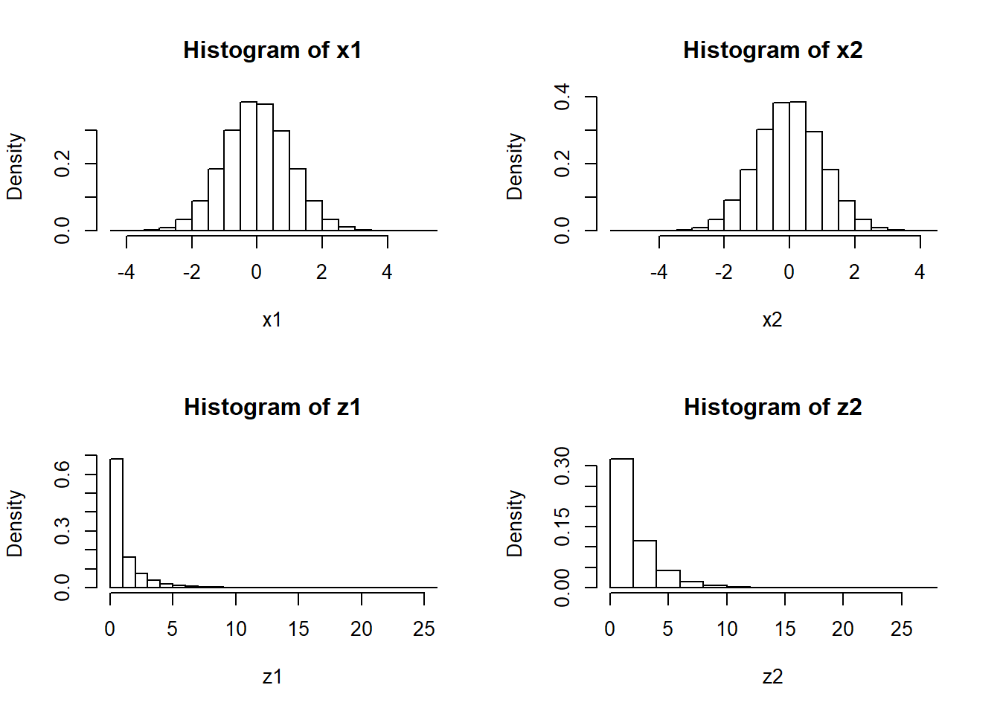
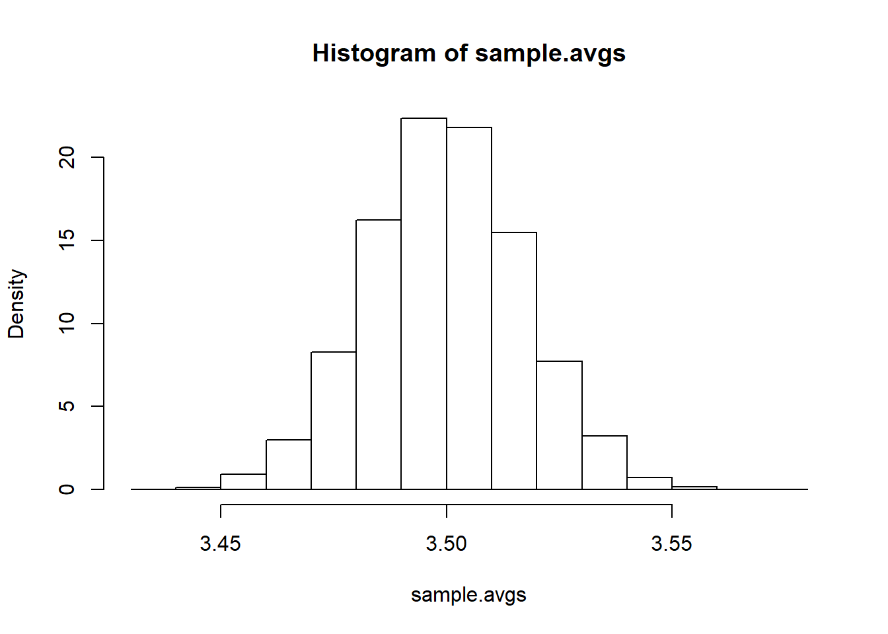
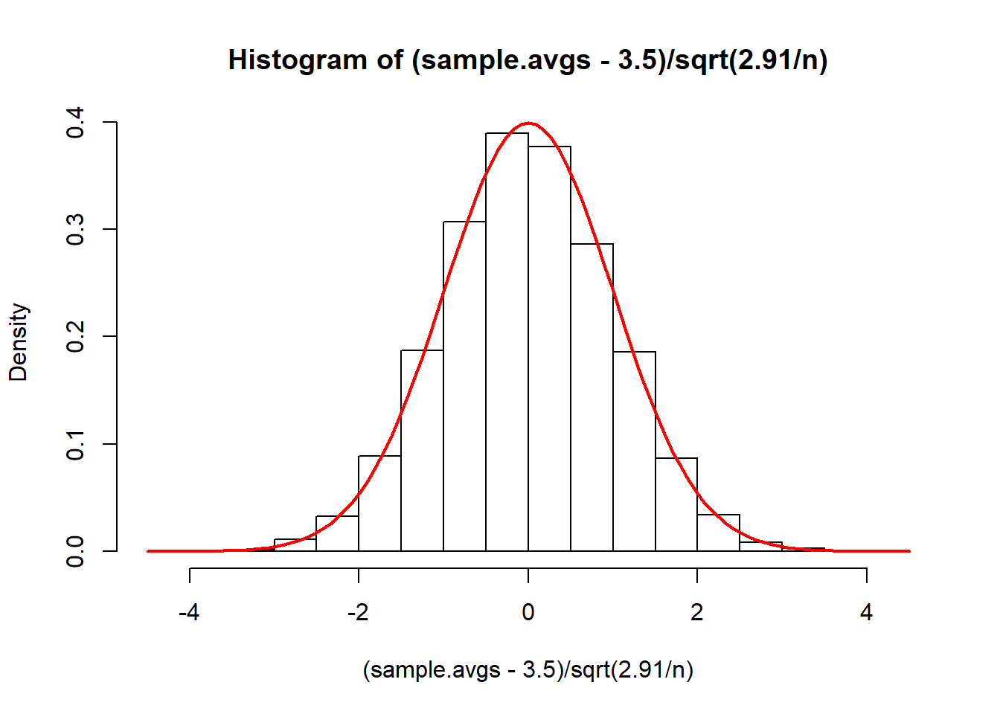

Chapter 7 Sampling distribution
7.1 Goals
Simulate a data-generating process (DGP) from scratch, given the population parameters
Show how to sample from the DGP numerous times, with each sample generating a sample estimate
SHow that these sets of sampling estimates follow a distribution
Note : Code chunks with STUDENTS are for intented to teach students, CHALLENGE are challenging but students with some programming skills can easily learn, PROF are for students with advanced programming skills and instructors.
7.2 Overview
- We follow the univariate DGP from before. We then loop our process to generate many samples, each with its own estimate of \(\beta_1\). We then graph the distribution of the estimates and look at their properties.
7.3 Generating data from a known linear univariate DGP
So let’s perform a data generating process for a dependent variable \[y\] which is given by the linear function \[y = \beta_0 + \beta_1 * x + u\] where \(\beta_0\) is the sum of the 1st and 2nd digit of my birthday, \(\beta_1\) is the sum of the 3rd and 4th digit of my birthday, x is distributed normal with mean of 10 and variance of the first non-zero digit of my birthday, and u is (independently) distributed normal with mean 0 and variance of the last non-zero digit of your birthday.
Let’s say the “population” is 1MM observations.
So generate all the components, and then multiply and sum them to generate the column for Y, and combine all columns into a single dataframe.
n <- 1000000
u<-rnorm(n, 0, sqrt(9))
x<-rnorm(n, 10,sqrt(1))
beta0<-1
beta1<-1
y<-beta0+beta1*x+u
df<-data.frame(y,x,u)
head(df)## y x u
## 1 10.708070 10.49637 -0.7882969
## 2 12.450647 10.45746 0.9931879
## 3 8.818106 11.68836 -3.8702541
## 4 9.882678 10.14413 -1.2614506
## 5 11.508339 10.01319 0.4951523
## 6 17.616721 10.03691 6.57981107.4 Sampling from the population
- Next, we will take 1,000 samples of 1,000 observation from the population data, with each sample yielding us a \(\hat{\beta_0}\) and \(\hat{\beta_1}\).
b_0<-c()
b_1<-c()
for(i in 1:1000){
sff<- df[sample(nrow(df), 1000, replace=FALSE), ]
estimates<-lm(y~x, sff)
b_0[i]<-coef(estimates)[1]
b_1[i]<-coef(estimates)[2]
}
coeff<-data.frame(b_0, b_1)
head(coeff)## b_0 b_1
## 1 0.5865453 1.0408402
## 2 1.4482701 0.9514253
## 3 0.9756452 1.0056688
## 4 -0.0979289 1.1108554
## 5 2.5829476 0.8484714
## 6 0.4448188 1.0627064ggplot(coeff, aes(x=b_0)) +
geom_histogram(color="black", fill="pink", binwidth = 0.05)+
ggtitle('TKtitle') 
ggplot(coeff, aes(x=b_1)) +
geom_histogram(color="black", fill="pink", binwidth = 0.05)+
ggtitle('TKtitle') 
7.5 Properties of the empirical simulations
## [1] 0.9607526## [1] 1.003667## [1] 0.9214121## [1] 0.0091740747.6 Changing the error variance
u50<-rnorm(n, 0, sqrt(50))
u1<-rnorm(n, 0, sqrt(1))
y2<-beta0+beta1*x+u50
y3<-beta0+beta1*x+u1
df<-data.frame(y,y2,y3,x,u)
head(df)## y y2 y3 x u
## 1 10.708070 10.123984 11.822746 10.49637 -0.7882969
## 2 12.450647 11.042329 13.280761 10.45746 0.9931879
## 3 8.818106 8.580325 11.977656 11.68836 -3.8702541
## 4 9.882678 8.961635 9.944481 10.14413 -1.2614506
## 5 11.508339 5.451122 9.761655 10.01319 0.4951523
## 6 17.616721 13.849249 10.486425 10.03691 6.5798110b_0_u50<-c()
b_1_u50<-c()
b_0_u1<-c()
b_1_u1<-c()
for(i in 1:1000){
sff<- df[sample(nrow(df), 1000, replace=FALSE), ]
estimates50<-lm(y2~x, sff)
b_0_u50[i]<-coef(estimates50)[1]
b_1_u50[i]<-coef(estimates50)[2]
estimates1<-lm(y3~x, sff)
b_0_u1[i]<-coef(estimates1)[1]
b_1_u1[i]<-coef(estimates1)[2]
}
coeff<-data.frame(b_0_u50, b_1_u50, b_0_u1, b_1_u1)
head(coeff)## b_0_u50 b_1_u50 b_0_u1 b_1_u1
## 1 -0.5737496 1.1367457 0.8919822 1.0120075
## 2 -1.6615207 1.2792027 1.2172898 0.9790788
## 3 0.5631146 1.0546185 1.3297850 0.9680056
## 4 5.4433421 0.5786502 1.0783725 0.9893487
## 5 -1.8864498 1.2727719 1.2892258 0.9722462
## 6 0.4815144 1.0847731 0.8847833 1.0125480ggplot(coeff, aes(x=b_1_u50)) +
geom_histogram(color="black", fill="pink", binwidth = 0.05)+
ggtitle('TKtitle') 
ggplot(coeff, aes(x=b_1_u1)) +
geom_histogram(color="black", fill="pink", binwidth = 0.05)+
ggtitle('TKtitle') 